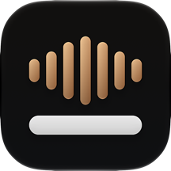

מדיניות פרטיות
מילים
עודכן לאחרונה: 23 בנובמבר 2026
תודה שבחרת ב״מילים״. אנו מכבדים את פרטיותך. מסמך זה מסביר איזה מידע האפליקציה מעבדת וכיצד.
תמלול במכשיר (ברירת מחדל)
תמלול הכתוביות הרגיל מתבצע כולו על המכשיר שלך, באמצעות מודל זיהוי דיבור מקומי. הסרטונים, האודיו והכתוביות שלך אינם נשלחים לשום שרת במסלול הזה, ונשמרים רק במכשיר.
תמלול ענן (Pro, אופציונלי)
אם תבחר בתמלול הענן המדויק (חלק ממנוי Pro), האודיו של הקטע שבחרת יישלח לשרת עיבוד חיצוני (ElevenLabs), יעובד שם כדי להפיק כתוביות, ויימחק לאחר העיבוד. שימוש זה מתבצע רק לאחר אישור מפורש שלך, ורק כאשר תבחר במסלול הענן. איננו שומרים את האודיו בשרתים שלנו.
כמו בכל חיבור אינטרנט, במסלול זה נשלחת גם כתובת ה־IP של המכשיר לספק העיבוד. העיבוד כפוף למדיניות הפרטיות של ElevenLabs, הזמינה בכתובת elevenlabs.io/privacy.
תרגום ענן (Pro, אופציונלי)
אם תפעיל תרגום ענן, טקסט הכתוביות בלבד (לא הווידאו ולא האודיו) יישלח לשירות תרגום חיצוני (Google Cloud Translation) לצורך התרגום, ואינו נשמר בשרתים שלנו לאחר העיבוד. העיבוד כפוף למדיניות הפרטיות של Google, הזמינה בכתובת policies.google.com/privacy.
מנויים
המנויים מנוהלים על ידי Apple דרך חשבון ה־Apple ID שלך. איננו רואים ואיננו שומרים את פרטי התשלום שלך. אימות המנוי מתבצע באמצעות קבלה חתומה של Apple.
סנכרון בין מכשירים (iCloud)
אם אתה מחובר ל־iCloud, הפרויקטים שלך מסתנכרנים בין המכשירים שלך דרך iCloud, בלי חשבון ובלי התחברות.
הנתונים נשמרים במסד הנתונים הפרטי שלך ב־iCloud, בחשבון ה־Apple ID שלך, ונספרים בנפח האחסון שלך. אנחנו לא יכולים לראות אותם ולא מקבלים אותם.
מה מסתנכרן: הכתוביות, התזמונים, הסגנון ושם הפרויקט, תמונות ואלמנטים שהוספת לסרטון, תמונה ממוזערת, גופנים שייבאת, סגנונות שמורים ומועדפים.
קובצי הווידאו והאודיו מסתנכרנים רק אם הפעלת ״סנכרון סרטונים״ בהגדרות (כבוי כברירת מחדל).
אפשר לכבות את הסנכרון בהגדרות האפליקציה, או לכבות את iCloud למילים בהגדרות המכשיר. מחיקת פרויקט באפליקציה מוחקת אותו גם מ־iCloud, ואת כל נתוני האפליקציה ב־iCloud אפשר למחוק בהגדרות המכשיר (iCloud ← ניהול אחסון).
החשבון הישן (גרסאות קודמות)
עד גרסה 1.6 אפשר היה להתחבר (Sign in with Apple) כדי לסנכרן פרויקטים דרך השרת שלנו. מגרסה 1.7 לא מציעים התחברות, והפרויקטים של מי שהתחבר עוברים ל־iCloud.
למי שהתחבר בעבר, נשמרים בשרת שלנו (בתשתית Cloudflare): המזהה ש־Apple מספקת וכתובת האימייל (אם שיתפת אותה, ייתכן שזו כתובת ממסר של Apple), אסימון התחברות מוצפן חד־כיוונית, ותוכן הפרויקטים שסונכרנו: הכתוביות, התזמונים, הסגנון ושם הפרויקט. קובצי וידאו ואודיו מעולם לא הועלו לשרת.
הנתונים האלה לא משמשים לשום מטרה. אפשר למחוק את החשבון ואת כל הנתונים שבשרת בכל עת מתוך האפליקציה (הגדרות ← חשבון ← מחיקת חשבון), או בפנייה אלינו במייל.
איסוף נתונים ואנליטיקה
האפליקציה אינה אוספת נתוני שימוש או אנליטיקה, ואינה עוקבת אחריך בין אפליקציות או אתרים.
הרשאות
- גלריה/מדיה: לבחירת סרטון או קובץ אודיו לתמלול, לשמירת סרטונים מיוצאים, ולמציאת הסרטון של פרויקט שהגיע ממכשיר אחר. החיפוש נעשה במכשיר בלבד, ושום דבר מהגלריה לא נשלח אלינו. הגישה מתבקשת רק כשמקישים על ״מציאה אוטומטית בתמונות״.
- זיהוי דיבור: לצורך הפקת הכתוביות מהאודיו במכשיר.
ילדים
האפליקציה אינה מיועדת לילדים מתחת לגיל 13 ואינה אוספת מהם מידע ביודעין.
זכויותיך
המידע המקומי נשמר במכשירך; מחיקת האפליקציה או הפרויקטים מוחקת אותו. נתונים שסונכרנו דרך iCloud נשמרים ב־iCloud שלך, וניתנים למחיקה כמתואר בסעיף ״סנכרון בין מכשירים״. נתונים בשרת שלנו מהחשבון הישן ניתנים למחיקה כמתואר בסעיף ״החשבון הישן״. לשאלות בנוגע למידע שלך ניתן לפנות אלינו בכתובת שלהלן.
שינויים במדיניות
אנו עשויים לעדכן מדיניות זו מעת לעת. תאריך העדכון בראש העמוד ישקף את השינוי האחרון.
יצירת קשר
Privacy Policy
Milim
Last updated: November 23, 2026
Thank you for choosing Milim (מילים). We respect your privacy. This document explains what information the app processes and how.
On-device transcription (default)
Standard subtitle transcription runs entirely on your device, using a local speech recognition model. In this mode your videos, audio and subtitles are not sent to any server and stay only on your device.
Cloud transcription (Pro, optional)
If you choose the more accurate cloud transcription (part of the Pro subscription), the audio of the segment you selected is sent to an external processing server (ElevenLabs), processed there to generate subtitles, and deleted after processing. This happens only after your explicit consent, and only when you choose the cloud option. We don't store the audio on our servers.
As with any internet connection, in this mode your device's IP address is also sent to the processing provider. Processing is subject to the ElevenLabs privacy policy, available at elevenlabs.io/privacy.
Cloud translation (Pro, optional)
If you turn on cloud translation, only the subtitle text (not the video or the audio) is sent to an external translation service (Google Cloud Translation) for translation, and it isn't kept on our servers after processing. Processing is subject to Google's privacy policy, available at policies.google.com/privacy.
Subscriptions
Subscriptions are managed by Apple through your Apple ID. We don't see or store your payment details. Subscriptions are verified using Apple's signed receipt.
Sync across devices (iCloud)
If you're signed in to iCloud, your projects sync between your devices through iCloud, with no account and no sign-in.
The data is stored in your private iCloud database, under your Apple ID, and counts toward your iCloud storage. We can't see it and don't receive it.
What syncs: subtitles, timings, style and project name, images and elements you added to the video, a thumbnail, fonts you imported, saved styles and favorites.
Video and audio files sync only if you turn on "Sync Videos" in Settings (off by default).
You can turn sync off in the app's settings, or turn off iCloud for Milim in your device's settings. Deleting a project in the app also deletes it from iCloud, and you can delete all of the app's iCloud data in your device's settings (iCloud › Manage Storage).
The old account (earlier versions)
Up to version 1.6 you could sign in (Sign in with Apple) to sync projects through our server. From version 1.7 sign-in isn't offered, and the projects of anyone who signed in move to iCloud.
For people who signed in before, our server (on Cloudflare's infrastructure) holds: the identifier Apple provides and the email address (if you shared it, possibly an Apple relay address), a sign-in token with one-way encryption, and the content of synced projects: subtitles, timings, style and project name. Video and audio files were never uploaded to the server.
This data is used for no purpose. You can delete the account and all data on the server at any time from within the app (Settings › Account › Delete Account), or by contacting us by email.
Data collection and analytics
The app doesn't collect usage data or analytics, and doesn't track you across apps or websites.
Permissions
- Photos/Media: to choose a video or audio file for transcription, to save exported videos, and to find the video of a project that came from another device. The search happens on the device only, and nothing from your library is sent to us. Access is requested only when you tap "Find Automatically in Photos".
- Speech recognition: to generate subtitles from the audio on your device.
Children
The app isn't directed at children under 13 and doesn't knowingly collect information from them.
Your rights
Local data is stored on your device; deleting the app or your projects removes it. Data synced through iCloud is stored in your iCloud and can be deleted as described in "Sync across devices". Data on our server from the old account can be deleted as described in "The old account". For questions about your data, you can contact us at the address below.
Changes to this policy
We may update this policy from time to time. The date at the top of the page reflects the latest change.